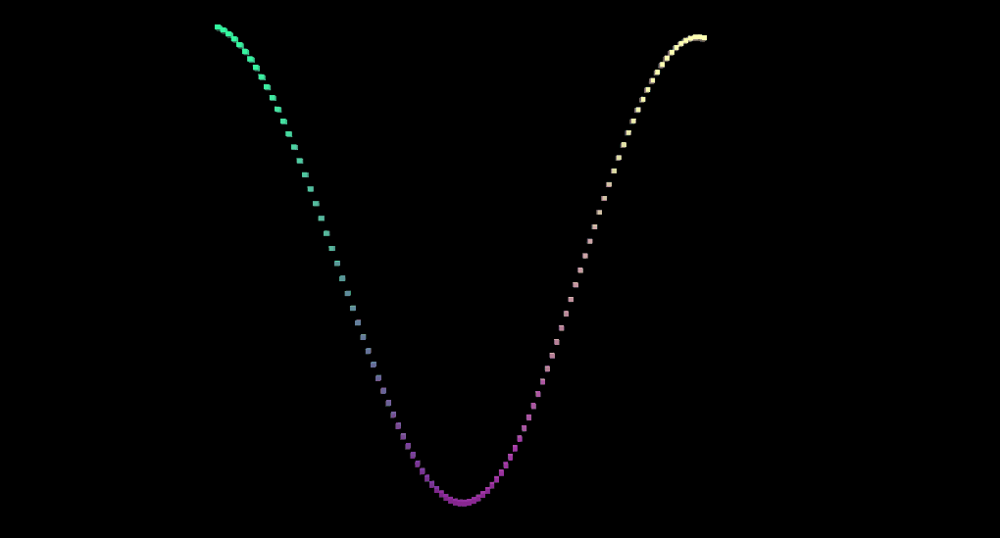
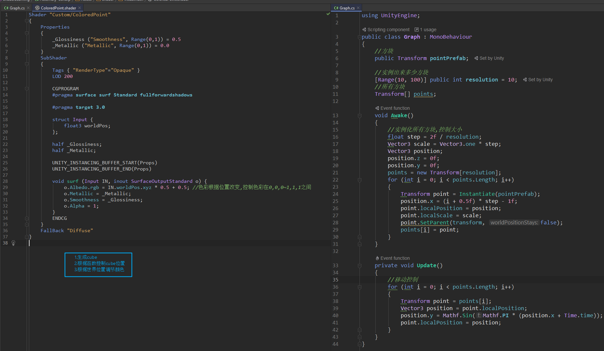

多函数相加:


复杂函数画面表现

using UnityEngine;
public class Graph : MonoBehaviour
{
//方块
public Transform pointPrefab;
//实例出来多少方块
[Range(10, 100)] public int resolution = 10;
//所有方块
Transform[] points;
// [Range(0, 1)] public int function;
public GraphFunctionName function;
void Awake()
{
float step = 2f / resolution;
Vector3 scale = Vector3.one * step;
points = new Transform[resolution * resolution];
for (int i = 0; i < points.Length; i++)
{
Transform point = Instantiate(pointPrefab);
point.localScale = scale;
point.SetParent(transform, false);
points[i] = point;
}
}
GraphFunction[] functions = {SineFunction, Sin2DFunction, MultiSineFunction, MultiSine2DFunction, Ripple, Cylinder,Sphere,Torus};
private void Update()
{
float t = Time.time;
GraphFunction f = functions[(int) function];
float step = 2f / resolution;
for (int i = 0, z = 0; z < resolution; z++)
{
float v = (z + 0.5f) * step - 1f;
for (int x = 0; x < resolution; x++, i++)
{
float u = (x + .5f) * step - 1f;
points[i].localPosition = f(u, v, t);
}
}
}
private const float pi = Mathf.PI;
static Vector3 SineFunction(float x, float z, float t)
{
Vector3 p;
p.x = x;
p.y = Mathf.Sin(pi * (x + t));
p.z = z;
return p;
}
static Vector3 Sin2DFunction(float x, float z, float t)
{
Vector3 p;
float y = Mathf.Sin(pi * (x + t));
y += Mathf.Sin(pi * (z + t));
y *= 0.5f;
p.y = y;
p.x = x;
p.z = z;
return p;
}
static Vector3 MultiSineFunction(float x, float z, float t) //多函数
{
Vector3 p;
float y = Mathf.Sin(pi * (x + t));
y += Mathf.Sin(pi * 2f * (x + t * 2f)) / 2f;
y = y * (2f / 3f);
p.x = x;
p.y = y;
p.z = z;
return p;
}
static Vector3 MultiSine2DFunction(float x, float z, float t)
{
Vector3 p;
float y = 4f * Mathf.Sin(pi * (x + z + t * 0.5f));
y += Mathf.Sin(pi * (x + t));
y += Mathf.Sin(2f * pi * (z + 2f * t)) * 0.5f;
y *= 1f / 5.5f;
p.x = x;
p.y = y;
p.z = z;
return p;
}
static Vector3 Ripple(float x, float z, float t)
{
Vector3 p;
float d = Mathf.Sqrt(x * x + z * z);
float y = Mathf.Sin(pi * (4f * d - t));
y /= 1f + 10f * d;
p.x = x;
p.y = y;
p.z = z;
return p;
}
static Vector3 Cylinder(float u, float v, float t)
{
Vector3 p;
float r = 0.8f + Mathf.Sin(pi * (6f * u + 2f * v + t)) * 0.2f;
p.x = r * Mathf.Sin(pi * u);
p.y = v;
p.z = r * Mathf.Cos(pi * u);
return p;
}
static Vector3 Sphere(float u, float v, float t)
{
Vector3 p;
float r = 0.8f + Mathf.Sin(pi * (6f * u + t)) * 0.1f;
r += Mathf.Sin(pi * (4f * v + t)) * 0.1f;
float s = r * Mathf.Cos(pi * 0.5f * v);
p.x = s * Mathf.Sin(pi * u);
p.y = r * Mathf.Sin(pi * 0.5f * v);
p.z = s * Mathf.Cos(pi * u);
return p;
}
static Vector3 Torus(float u, float v, float t)
{
Vector3 p;
float r1 = 0.65f + Mathf.Sin(pi * (6f * u + t)) * 0.1f;
float r2 = 0.2f + Mathf.Sin(pi * (4f * v + t)) * 0.05f;
float s = r2 * Mathf.Cos(pi * v) + r1;
p.x = s * Mathf.Sin(pi * u);
p.y = r2 * Mathf.Sin(pi * v);
p.z = s * Mathf.Cos(pi * u);
return p;
}
}
public enum GraphFunctionName
{
Sine,
Sin2DFunction,
MultiSine,
MultiSine2DFunction,
Ripple,
Cylinder,
Sphere,
Torus
}
using UnityEngine;
public delegate Vector3 GraphFunction (float u, float v, float t);